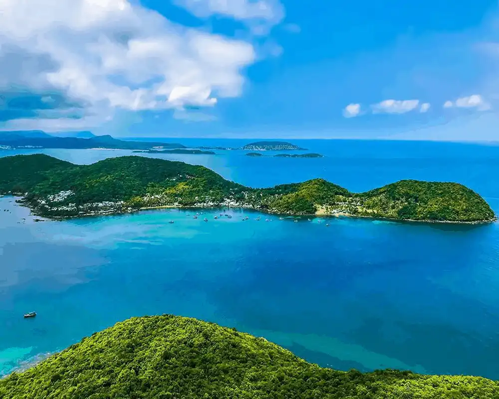
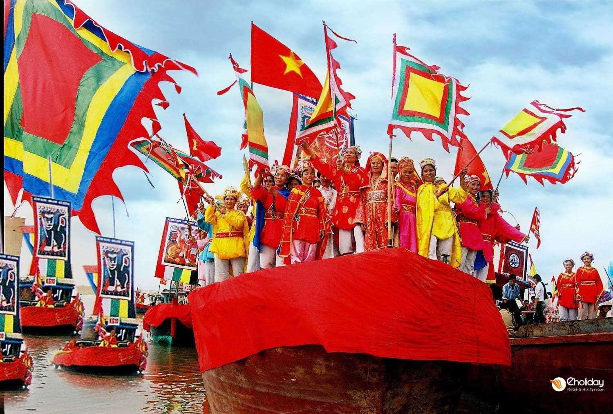

PHÚC QUỐC
Bãi biển cát trắng óng ánh của Phú Quốc đã giúp đảo được mệnh danh là "Đảo Ngọc", nhưng những nỗ lực bảo tồn môi trường và di sản văn hóa nơi đây cũng xứng đáng được chú ý không kém vẻ đẹp tuyệt vời của biển xanh và cát trắng. Nghề đánh bắt cá và nông nghiệp vẫn là những ngành chính của đảo, và hơn một nửa diện tích đảo yên bình này đã được bảo vệ như một Khu dự trữ Sinh quyển của UNESCO từ năm 2006.
Là quê hương của nước mắm, hồ tiêu và ngọc trai, Phú Quốc mang đến cả trải nghiệm sang trọng lẫn đời sống địa phương, với dòng nước trong xanh vào ban ngày và bầu trời quang đãng lúc đêm về.
Bãi biển và thiên nhiên Phú Quốc
Bờ biển dài 150 km của Phú Quốc với những con sóng nhẹ nhàng và làn nước trong xanh màu ngọc lam biến nơi đây thành điểm đến hàng đầu Việt Nam cho các môn thể thao dưới nước. Nếu bạn muốn thư giãn, hãy đến Bãi Trường (Long Beach) – nơi có 20 km bãi biển ngắm hoàng hôn không bị che chắn. Về phía Bắc, những con đường đất và khu nghỉ dưỡng ẩn mình giữ cho các bãi biển rợp bóng cây như Gành Dầu và Bãi Thơm luôn yên tĩnh, tránh xa đám đông.
Những du khách ưa khám phá có thể trekking dãy núi trải dài suốt đảo, nhưng chỉ cần những chuyến đi bộ ngắn trong rừng xanh quanh năm cũng sẽ đem đến phần thưởng là những thác nước, hồ nước đá và hang động thú vị.

Di sản và văn hóa
Phú Quốc nổi tiếng với nước mắm, và bạn nên thử tham quan nhà máy nước mắm để hiểu cách thức chế biến món đặc sản lên men quý giá này. Để trải nghiệm đời sống thường nhật, hãy ghé thăm làng chài truyền thống như Hòn Hàm Ninh để thưởng thức hải sản tươi ngon tại nhà hàng nổi (đừng quên thử cùng với hồ tiêu đen trồng tại địa phương – một đặc sản khác!).
Du khách yêu thích văn hóa và lịch sử sẽ hài lòng khi tham quan các địa điểm giáo dục như nhà tù Cây Dừa, cùng các ngôi đền như Cao Đài, nơi tín đồ theo một tôn giáo độc đáo kết hợp các yếu tố của Kitô giáo, Phật giáo, Hồi giáo, Nho giáo, Ấn Độ giáo, Thần linh và Đạo giáo.

Thời tiết Phú Quốc – Khi nào nên đến
Phú Quốc có khí hậu ấm áp và dễ chịu quanh năm, với nhiệt độ trung bình khoảng 27°C. Mùa khô từ tháng 10 đến tháng 3 là thời điểm mát mẻ nhất, còn tháng 4 và tháng 5 là những tháng nóng nhất, khi mùa mưa bắt đầu xuất hiện. Đến tháng 7, mùa mưa chính thức bắt đầu, mang theo nhiệt độ mát hơn cho đến tháng 10.